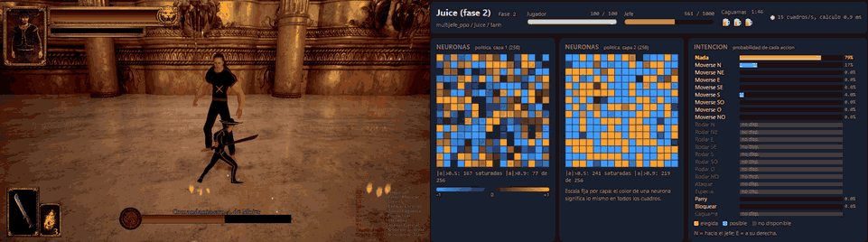

Dark México RL
Una red neuronal que aprendió a pelear contra los jefes de Dark México. Primero imita a un bot de reglas escrito a mano y después mejora sola con PPO.
Proyecto educativo, no oficial y sin relación con NorDreams. Necesitas el juego comprado; el repositorio no incluye archivos del juego.

Resultados
Cien peleas por jefe en el juego real, jefe al 100% de vida, política determinista.
| Jefe | Bot de reglas | Imitación | PPO |
|---|---|---|---|
Sheinbaum (juice) | 66% | 76% | 92% |
| AMLO + Chamuco | 100% | 100% | 92% |
| Chamuco | 100% | 100% | 99% |
| Chupacabras | 98% | 100% | 100% |
Para aprender
- Guía interactiva: neuronas, softmax, Tanh, imitación y PPO explicados desde cero.
- Diagrama general y diagrama detallado del sistema.
- Instalación, ver pelear al modelo y entrenar tu propia IA.
- Lo que aprendimos: lo que funcionó y lo que no.